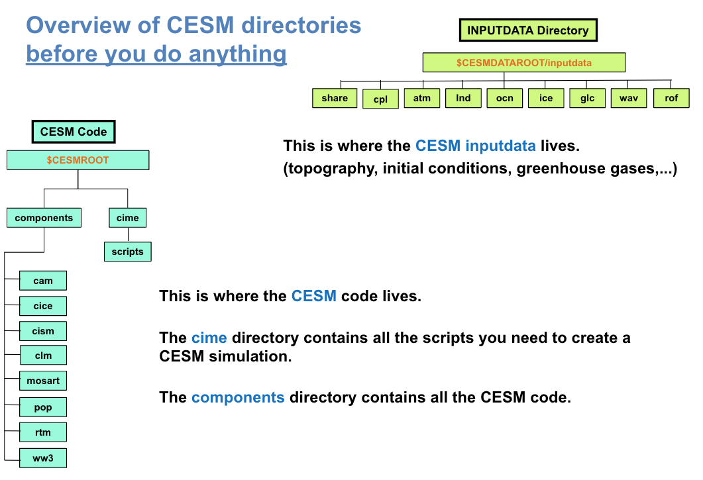

Overview#
This section introduces the basics of running CESM, covering:
The directory structure of the CESM code and data.
The commands needed to run CESM.
CESM code and data#
Two things are necessary for running CESM:
the CESM code itself
and input datasets that are specific to the case you’re running (e.g., prescribed sea surface temperatures in the case of an uncoupled simulation or greenhouse gas/aerosol forcing datasets).
Figure 1 shows you the CESM directory structure with the CESM code and the input datasets.

Figure 1: CESM code and input datasets
In Figure 1, you can see two main areas:
The location of the input data. In this tutorial, it has been set up for you as the environment variable
$CESMDATAROOT.The CESM root directory contains all the CESM scripts and code that you’ll be using. In this tutorial, it has already been set up for you as an environment variable
$CESMROOT.
You can go into the directory $CESMROOT or $CESMDATAROOT using the command cd (Change Directory).
NOTE: If you are not familiar with unix commands, please review the unix section for guidance on the cd and other commands.
cd $CESMROOT ; # This command brings into the $CESMROOT directory
cd $CESMDATAROOT ; # This command brings into the $CESMDATAROOT directory
CESMROOT#
The $CESMROOT directory contains all the CESM code and scripts necessary to run CESM. The following two directories are
likely to be of most interest:
cd $CESMROOT/cime ; # This directory contains all the scripts necessary to create a cesm experiment
cd $CESMROOT/components ; # This directory contains the model source code for each component.
As an example, go to:
cd $CESMROOT/components/cam/src/physics/cam
There you will see all the source code for physical parameterizations within CAM if you use the command ls.
CESMDATAROOT#
The $CESMDATAROOT directory contains all the dataset necessary to run CESM.
As an example, go to:
cd $CESMDATAROOT/inputdata/atm/cam/topo
This directory contains the topography datasets used by CESM
Set of commands to run CESM during the tutorial#
You can run a simple experiment with CESM using only four commands: create_newcase, case.setup, case.build, case.submit.
To execute these commands successfully, you will also need to navigate between various CESM directories. You will use unix commands such as cd to navigate between CESM directories. Once again, if you are not familiar with unix commands, please review the unix section for guidance.
NOTE: Please don’t execute these commands at this point. We will execute these four commands one at a time in the following sections. This section is designed to provide an overview of the necessary commands to run CESM and understand what each command does.
# go into scripts directory into the CESM code
cd $CESMROOT/cime/scripts
# create a new case in the directory “cases” in your home directory
./create_newcase --case ~/cases/case01 --compset B1850-tutorial --res f19_g17
# go into the case you just created in the last step
cd ~/cases/case01/
# setup your case
./case.setup
# build the executable
qcmd -- ./case.build
# submit your run
./case.submit
NOTE: B1850-tutorial is not an available configuration in CESM2. It is a configuration that has been specially designed for this tutorial to make the model run faster. All the concepts you learn here will work with the standard model.
Below you can uncover the set of commands to run CESM with the standard CESM2 model.
Click here for commands to run the standard CESM2 model
This are the commands to run CESM with the standard model. Can you spot the differences?
# go into scripts directory into the CESM code
cd $CESMROOT/cime/scripts
# create a new case in the directory “cases” in your home directory
./create_newcase --case ~/cases/case01 --compset B1850 --res f09_g17
# go into the case you just created in the last step
cd ~/cases/case01/
# setup your case
./case.setup
# build the executable
./case.build
# submit your run
./case.submit
In the following sections, you will learn the purpose of each command and how it relates to the CESM directory structure.